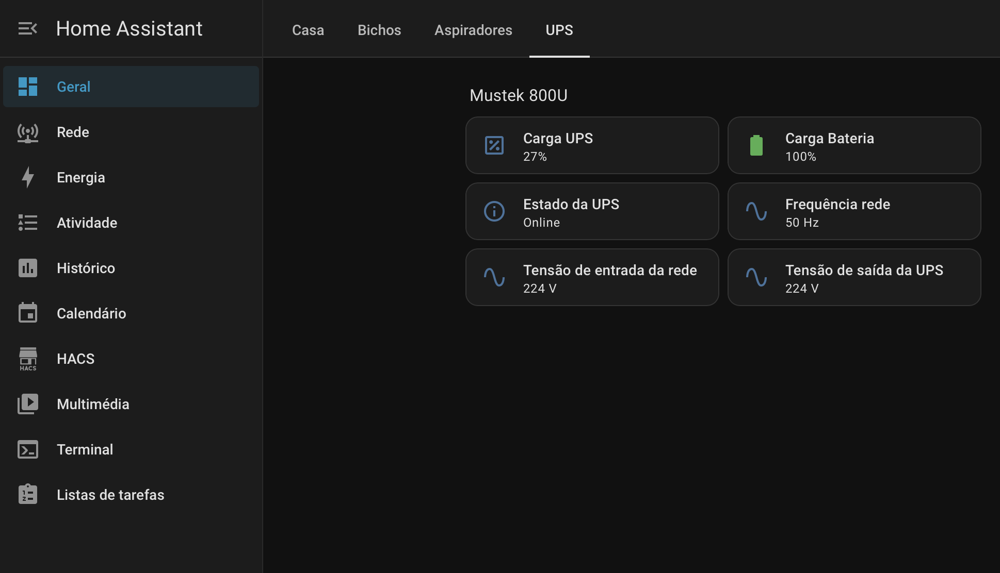

O projeto
O Home Assistant funciona como ponto central para reunir estados, dashboards e automações do ambiente doméstico e de laboratório. A abordagem privilegia painéis simples, práticos e fáceis de consultar no dia a dia.

Áreas em utilização
O que está integrado
- Controlo básico de iluminação e tomadas.
- Leitura de estados do ambiente e sensores.
- Organização por áreas, como casa, aspiradores e UPS.
- Integração local com MQTT e dispositivos Zigbee compatíveis.
- Consultas rápidas para monitorização doméstica e de laboratório.
Exemplos visuais

Abordagem
- Criar dashboards claros, com informação útil e sem excesso de complexidade.
- Integrar primeiro as funções essenciais e só depois acrescentar novas áreas.
- Usar a plataforma como apoio à monitorização do laboratório e de alguns equipamentos domésticos.
As capturas apresentadas são ilustrativas e mostram apenas a organização geral do ambiente.